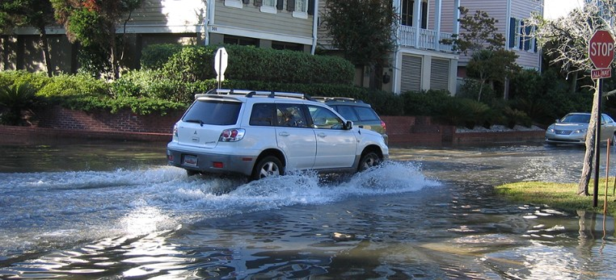
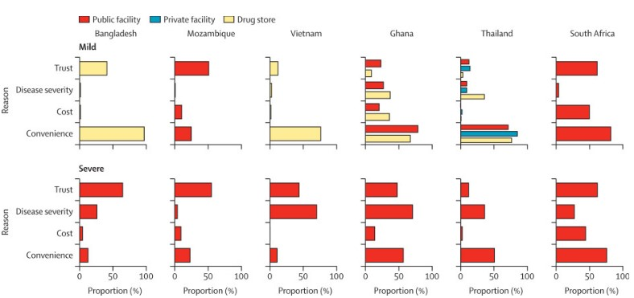
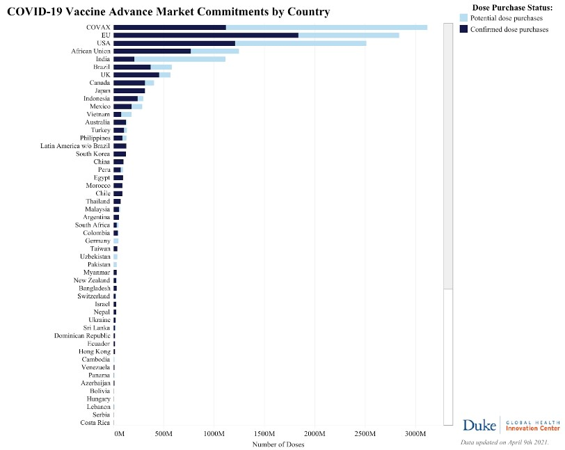
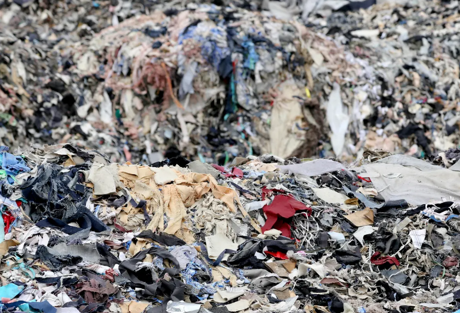
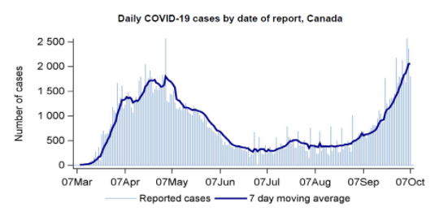
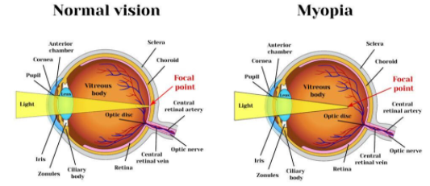
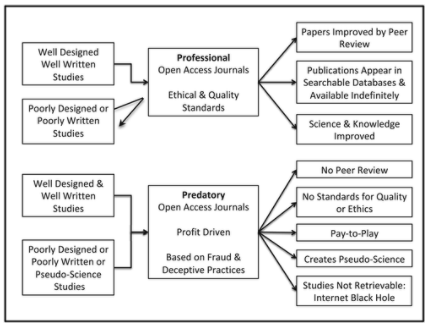

blog
welcome to our blog
New content is added regularly, so be sure to check back for more posts!
How Humans Are Changing Tidal Patterns
Throughout history, tides have occured in regular, predictable cycles. This predictability is important for a variety of sectors. For example, fishermen use these predictions to effectively catch fish by understanding the relationship between the tide cycle and fish concentration (National Ocean Service, n.d.-b). Anything and everything - from navigating ships, to coastal zone engineering projects, to the weather - depends upon the tidal cycles (National Ocean Service, n.d.-b). But what happens when these tidal patterns change?
Oceanographers have recently noticed that tides around the world are changing (Witze, 2020). Unfortunately, similar to climate change, humans are in the forefront of changing tides (Witze, 2020). By dredging river channels and filling coastal wetlands, tidal range can either increase dramatically, or shrink (Witze, 2020). Regardless of the nature of the shift, this negatively affects many businesses and people, especially coastal residents.
A flooded street with a car driving by (National Ocean Service, n.d.-a). Retrieved from: https://oceanservice.noaa.gov/podcast/oct15/dd63-nuisance-flooding.html
An interesting article published in Science Advances studies the changing tides and how it has exacerbated nuisance flooding along the U.S coastline (Li et al., 2021). Nuisance flooding (NF) occurs due to sea-level cycles and seasonal tidal variations semi-annually and annually (Li et al., 2021). The main cause of increased NF is due to increase in sea level; between 1993 and 2014, global mean sea level increased at an average rate of 3.3 mm per year, and this reduces the gap between flood thresholds and water levels (Li et al., 2021). The study by Li et al. analysed records from 40 tide gauges hourly and synthesized time series of water levels by comparing the observed tides to unchanged historic tides (Li et al., 2021).
Wilmington, a city in North Carolina, is an example of secular change in tidal patterns. The tidal range increased by 542 mm per century since 1935, due to this and increase in high water levels, there has been an increase in NF in Wilmington during the second half of the 20th century (Li et al., 2021). Additionally, the duration of NF also changes as tidal patterns change, the longer the flooding, the more disruptions caused. From all 40 gauges, additional 351 hours of NF occurred in 2019 due to the changes in tidal patterns (Li et al., 2021). Furthermore, the results of the study show that secular increases in tidal range causes NF to happen earlier than when the sea-level rises, hence reducing the amount of time available to prepare adaptation measures (Li et al., 2021). The frequency and rate of occurrences of NF has increased drastically along the U.S. coasts, ranging from 300 to 900% (Li et al., 2021). Although relative mean sea-level is the main cause for the increase in NF, about 27% of the NF in 2019 were accounted for the secular changes in tides (Li et al., 2021).
Overall, changes in tidal patterns can affect fishing, floods, and marine life - just to name a few. As people continue to fill wetlands, dredge channels, alter coastal environments, and contribute to climate change, tidal patterns change drastically.
- Li, S., Wahl, T., Talke, S. A., Jay, D. A., Orton, P. M., Liang, X., Wang, G., & Liu, L. (2021). Evolving tides aggravate nuisance flooding along the U.S. coastline. Science Advances, 7(10), 1–10. https://doi.org/10.1126/sciadv.abe2412
- National Ocean Service. (n.d.-a). Nuisance Flooding. National Oceanic and Atmospheric Administration. Retrieved April 4, 2021, from https://oceanservice.noaa.gov/podcast/oct15/dd63-nuisance-flooding.html
- National Ocean Service. (n.d.-b). Tides and Water Levels. National Oceanic and Atmospheric Administration. Retrieved April 4, 2021, from https://oceanservice.noaa.gov/education/tutorial_tides/tides09_monitor.html
- Witze, A. (2020). The tides they are a-changin’ — and it’s not just from climate change. Knowable Magazine | Annual Reviews. https://knowablemagazine.org/article/physical-world/2020/tides-they-are-changin-and-its-not-just-climate-change
How Humans Are Changing Tidal Patterns
Throughout history, tides have occured in regular, predictable cycles. This predictability is important for a variety of sectors. For example, fishermen use these predictions to effectively catch fish by understanding the relationship between the tide cycle and fish concentration (National Ocean Service, n.d.-b). Anything and everything - from navigating ships, to coastal zone engineering projects, to the weather - depends upon the tidal cycles (National Ocean Service, n.d.-b). But what happens when these tidal patterns change?
Oceanographers have recently noticed that tides around the world are changing (Witze, 2020). Unfortunately, similar to climate change, humans are in the forefront of changing tides (Witze, 2020). By dredging river channels and filling coastal wetlands, tidal range can either increase dramatically, or shrink (Witze, 2020). Regardless of the nature of the shift, this negatively affects many businesses and people, especially coastal residents.
A flooded street with a car driving by (National Ocean Service, n.d.-a). Retrieved from: https://oceanservice.noaa.gov/podcast/oct15/dd63-nuisance-flooding.html
An interesting article published in Science Advances studies the changing tides and how it has exacerbated nuisance flooding along the U.S coastline (Li et al., 2021). Nuisance flooding (NF) occurs due to sea-level cycles and seasonal tidal variations semi-annually and annually (Li et al., 2021). The main cause of increased NF is due to increase in sea level; between 1993 and 2014, global mean sea level increased at an average rate of 3.3 mm per year, and this reduces the gap between flood thresholds and water levels (Li et al., 2021). The study by Li et al. analysed records from 40 tide gauges hourly and synthesized time series of water levels by comparing the observed tides to unchanged historic tides (Li et al., 2021).
Wilmington, a city in North Carolina, is an example of secular change in tidal patterns. The tidal range increased by 542 mm per century since 1935, due to this and increase in high water levels, there has been an increase in NF in Wilmington during the second half of the 20th century (Li et al., 2021). Additionally, the duration of NF also changes as tidal patterns change, the longer the flooding, the more disruptions caused. From all 40 gauges, additional 351 hours of NF occurred in 2019 due to the changes in tidal patterns (Li et al., 2021). Furthermore, the results of the study show that secular increases in tidal range causes NF to happen earlier than when the sea-level rises, hence reducing the amount of time available to prepare adaptation measures (Li et al., 2021). The frequency and rate of occurrences of NF has increased drastically along the U.S. coasts, ranging from 300 to 900% (Li et al., 2021). Although relative mean sea-level is the main cause for the increase in NF, about 27% of the NF in 2019 were accounted for the secular changes in tides (Li et al., 2021).
Overall, changes in tidal patterns can affect fishing, floods, and marine life - just to name a few. As people continue to fill wetlands, dredge channels, alter coastal environments, and contribute to climate change, tidal patterns change drastically.
- Li, S., Wahl, T., Talke, S. A., Jay, D. A., Orton, P. M., Liang, X., Wang, G., & Liu, L. (2021). Evolving tides aggravate nuisance flooding along the U.S. coastline. Science Advances, 7(10), 1–10. https://doi.org/10.1126/sciadv.abe2412
- National Ocean Service. (n.d.-a). Nuisance Flooding. National Oceanic and Atmospheric Administration. Retrieved April 4, 2021, from https://oceanservice.noaa.gov/podcast/oct15/dd63-nuisance-flooding.html
- National Ocean Service. (n.d.-b). Tides and Water Levels. National Oceanic and Atmospheric Administration. Retrieved April 4, 2021, from https://oceanservice.noaa.gov/education/tutorial_tides/tides09_monitor.html
- Witze, A. (2020). The tides they are a-changin’ — and it’s not just from climate change. Knowable Magazine | Annual Reviews. https://knowablemagazine.org/article/physical-world/2020/tides-they-are-changin-and-its-not-just-climate-change
Curiosity and Perseverance Beyond Our World
Last July, NASA launched their new rover on a mission larger than life, or at least, larger than life here on Earth. This February, the rover has touched down and joined its predecessor, Curiosity, in roaming the red planet in search of any signs of life. Nicknamed Perseverance, the rover is NASA’s fifth rover in the roster since the initial launch in 1997.NASA The rovers have made some exciting key discoveries in the mere 24 years that the program has been running for, like evidence that Mars was once much warmer and wetter, like Earth.ARTICLE 3 Although it is now dry and barren, this has raised a lot of interest in the possibilities of supporting life in the future. Perseverance will be continuing to spot out different parts of Mars, starting in the Jezero Crater, so that we can have a better understanding of what the climate and geography is like there before human exploration planning begins.
A map of landing sites of previously successful Mars missions by NASA.
Along with all the technology needed to analyze the conditions on Mars, Perseverance was also sent up with the names of nearly million people who signed up for the Send your Name to Mars program, engraved on 3 tiny plates the size of a fingernail.WEB If you missed your chance, don’t worry, there’s still time to get on board the next rover! You can find out more on their program website.
Whether we will be sending humans to Mars in the near future or not, we may not find out immediately from Perseverance’s research. However, given the speed at which we have been discovering things about Mars, perhaps it will at least give us a good glimpse into what we will be capable of in the years to come.
- Mars Exploration Past Missions. NASA. https://www.nasa.gov/mission_pages/mars/missions/index-past.html.
- NASA. (2020). [Image]. Retrieved 8 March 2021 https://mars.nasa.gov/mars2020/mission/science/landing-site/.
- 'Send Your Name' Placard Attached to Perseverance – NASA’s Mars Exploration Program. NASA’s Mars Exploration Program. (2020). https://mars.nasa.gov/resources/24877/send-your-name-placard-attached-to-perseverance/.
Managing the Arms Race between our World and Bacteria
Here’s a medical anecdote for you: a patient falls ill with tuberculosis. He was given several antibiotics for a total of 39 weeks. After the therapy, the antibiotics seemed to have done their job, and he was cleared.
Two months later, the patient was readmitted to the hospital with tuberculosis. Despite being treated with a variety of antibiotics, he died 10 days later. Why did this happen?4
The answer lies in the very nature of antibiotics. Antibiotics are chemicals that are primarily used to fight bacteria. However, their misuse can cause bacteria to become resistant to them, leaving us with no treatment to combat them anymore.2
In the case of our patient, not all the bacteria had died at the end of his first treatment. A few lucky ones had a mutation which gave them resistance to the antibiotics, and they survived to pass on the genes to future generations. This is why the patient experienced a second case of tuberculosis, and why the doctors were not able to use the same treatment on him twice. Developing and using antibiotics, then, is like a balancing act. Too little, and they won’t be killed. Too many, and they will have a better chance of evolving ways to counter it.
This was the topic of interest for the researchers of the paper, “Community-based antibiotic access and use in six low-income and middle-income countries: a mixed-method approach”. Published this March, the team looked into the use of antibiotics across six different communities in low-income and middle-income countries. One of the biggest issues they noticed was that they had limited medical support, and this lack of understanding led to many alternative solutions that were not managed by licensed professionals. In fact, 35 percent of people surveyed said they had purchased antibiotics without a prescription.1 Amongst the low- and lower-income countries, this was much more widespread: for instance, in rural South Africa, little health care services, unclear rules on getting prescriptions, and affordability were all reasons why people could not get the antibiotics that they needed.1 As a result, they were forced to make their own decisions and rely on illegal services to obtain medication. People in these types of countries also said that self-treatment was just more convenient than using public health services, less time-consuming, and cheaper.1 For an antibiotic to be effective, it must kill the bacteria faster than it can mutate and reproduce. The repeated use of antibiotics, as we have seen with the tuberculosis story, can lead to antibiotic resistance and the bacteria may become even more damaging in the long run. Countries with poorer healthcare systems, like those studied, are especially at risk. If bacteria develop immunity to the limited antibiotics that are available, then we would not have any way to combat it. This would be difficult for hospitals and treatment centres as people who catch otherwise preventable illnesses have to be taken care of along with those who have other life-threatening illnesses. It would be adding unnecessary harm and complications to citizens and their health systems.
Breakdown of what places people consulted first when someone in their household was mildly or severely ill, and for what reasons.1
This research highlighted the importance of pharmacists in healthcare systems to promote the appropriate use of antibiotics in communities.1 With professionals, people can be properly diagnosed and prescribed the right medicine. With improved laws and funding, people can get the medications they need without any worries of cost or quality of medicine. In India, for example, they have made it mandatory to show a red vertical band on prescription-only drugs so that people can easily identify them and be aware of the dangers of abusing that type of drug, and this is one of many efforts that are going around globally to help teach people safe medicine practices.1
Antibiotic development has come a long way in the last century, reshaping modern medical treatment. Tuberculosis, which was originally discovered in 1882, was treated with chemotherapy for a good 40 years until research began on using antibiotics to combat it.3 With the new insights of this paper, we can better understand how health policies can affect the application of valuable scientific discoveries.
- Do, N., Vu, H., Nguyen, C., Punpuing, S. Khan, W., Gyapon, M. (2021). Community-based antibiotic access and use in six low-income and middle-income countries: a mixed-method approach. The Lancet. https://doi.org/10.1016/S2214-109X(21)00024-3
- Riaz, L, Anjum, M., Yang, Q., Safeer, R., Sikandar, A. Habib Ullah, Asfandyar Shahab, Wei Yuan, Qianqian Wang. (2020). Antibiotics and Antimicrobial Resistance Genes in the Environment. Elsevier, 1, 369-393.
- Murray, J., Schruafnagel, D., Hopewell, P. (2015). Treatment of Tuberculosis. A Historical Perspective. ATS Journals. https://doi.org/10.1513/AnnalsATS.201509-632PS
- Scott Freeman, Kim Quillin, Lizabeth Allison, Michael Black, Greg Podgorski, Emily Taylor, Jeff Carmichael, Michael Harrington, Joan C. Sharp. (2018). Biological Science, Third Canadian Edition, (3rd ed.). Pearson Canada. https://doi.org/10.1016/B978-0-12-818882-8.00023-1
Social Media Overuse and the Pandemic
When the COVID-19 pandemic hit, every aspect of life changed. What was once deemed ‘normal’, like hugging a friend, became an unthinkable act. The lockdowns and restrictions all around the world have severely impacted the social interactions people once had, making society even more dependent on social media.
Social media, without a doubt, has always been an important topic of conversation even before COVID-19. Over the years, the increased use of social media has negatively impacted mental and physical well-being. A study published in 2017 reported that over 210 million people suffer from social media and internet addictions around the world (Longstreet & Brooks, 2017). In addition, a study published by Emotion found that teenagers who use their phones for 5 hours per day were almost twice as likely to experience depressive symptoms than their counterparts who only spend 1 hours daily on their phones (Twenge et al., 2018).

An image of a man looking down, holding his head between his arms as social media apps surround him. Image retrieved from (John, 2020): https://citizenbloggers.wordpress.com/2020/05/19/social-media-addiction-poses-mental-health-problems-studies/
These are alarming statistics, but how has this changed because of COVID-19?
With the new restrictions in place, social media helps with keeping people connected. 87% people in India reported increased usage of social media, with a 75% increase of apps like Twitter, Facebook, and Whatsapp (Singh et al., 2020). These social media platforms allowed people to not only communicate with people they know, but to also find emotional and peer support during these trying times. There are many posts on social media that promote a healthy mental and physical lifestyle during lockdown. Furthermore, as everyone around the world are facing similar challenges with the lockdown/restrictions, people worldwide can relate to one another through social media posts, creating a sense of community and optimism. Beyond the unconditional support that social media can provide, it also serves as an outlet for global day-to-day news and updates.
Despite an improved sense of connection, the effects are not all good. As reported in Psychology Today, with the increased use of screens comes the increased exposure to blue light, which affects melatonin and metabolism – leading to sleep deprivation and irritability (Barnes & Wills, 2020). This can have a negative effect on one’s mental health. Another aspect of social media that can affect mental health is the swarm of information that is continuously being posted and reposted (Barnes & Wills, 2020). Especially with the pandemic, there has been an increase in posts related to unemployment, evictions, death, and many other tragic news that have become constant reminders of today’s immense struggles (Barnes & Wills, 2020). Being overexposed to pandemic-related devastations may increase irritability, feelings of depression and anxiety, as well as cause excessive worries. Unfortunately, from false COVID-19 cures to conspiracy theories, social media can also be a hub to spread misinformation and propaganda (Barnes & Wills, 2020). This creates a state of confusion, fear, and anxiety that can potentially result in not trusting official public guidelines – which poses a great health risk (Barnes & Wills, 2020).
Overall, social media undoubtedly has its benefits, but it also has its drawbacks that can be detrimental to one’s health. Although the COVID-19 pandemic has further exacerbated the negative effects of social media, many people have nonetheless found comfort in the emotional and peer support it provides from others all around the world.
- Barnes, C., & Wills, M. (2020). Social Media During the Time of COVID-19. Psychology Today. https://www.psychologytoday.com/us/blog/mental-illness-in-america/202012/social-media-during-the-time-covid-19
- John, A. (2020). Social Media Addiction: Another Mental Health Problem-Studies. Citizen Bloggers Nigeria. https://citizenbloggers.wordpress.com/2020/05/19/social-media-addiction-poses-mental-health-problems-studies/
- Longstreet, P., & Brooks, S. (2017). Life satisfaction: A key to managing internet & social media addiction. Technology in Society, 50, 73–77. https://doi.org/https://doi.org/10.1016/j.techsoc.2017.05.003
- Singh, S., Dixit, A., & Joshi, G. (2020). "Is compulsive social media use amid COVID-19 pandemic addictive behavior or coping mechanism? Asian Journal of Psychiatry, 54, 102290. https://doi.org/10.1016/j.ajp.2020.102290
- Twenge, J. M., Martin, G. N., & Campbell, W. K. (2018). Decreases in psychological well-being among American adolescents after 2012 and links to screen time during the rise of smartphone technology. In Emotion (Vol. 18, Issue 6, pp. 765–780). American Psychological Association. https://doi.org/10.1037/emo0000403
Social Media Overuse and the Pandemic
When the COVID-19 pandemic hit, every aspect of life changed. What was once deemed ‘normal’, like hugging a friend, became an unthinkable act. The lockdowns and restrictions all around the world have severely impacted the social interactions people once had, making society even more dependent on social media.
Social media, without a doubt, has always been an important topic of conversation even before COVID-19. Over the years, the increased use of social media has negatively impacted mental and physical well-being. A study published in 2017 reported that over 210 million people suffer from social media and internet addictions around the world (Longstreet & Brooks, 2017). In addition, a study published by Emotion found that teenagers who use their phones for 5 hours per day were almost twice as likely to experience depressive symptoms than their counterparts who only spend 1 hours daily on their phones (Twenge et al., 2018).
An image of a man looking down, holding his head between his arms as social media apps surround him. Image retrieved from (John, 2020): https://citizenbloggers.wordpress.com/2020/05/19/social-media-addiction-poses-mental-health-problems-studies/
These are alarming statistics, but how has this changed because of COVID-19?
With the new restrictions in place, social media helps with keeping people connected. 87% people in India reported increased usage of social media, with a 75% increase of apps like Twitter, Facebook, and Whatsapp (Singh et al., 2020). These social media platforms allowed people to not only communicate with people they know, but to also find emotional and peer support during these trying times. There are many posts on social media that promote a healthy mental and physical lifestyle during lockdown. Furthermore, as everyone around the world are facing similar challenges with the lockdown/restrictions, people worldwide can relate to one another through social media posts, creating a sense of community and optimism. Beyond the unconditional support that social media can provide, it also serves as an outlet for global day-to-day news and updates.
Despite an improved sense of connection, the effects are not all good. As reported in Psychology Today, with the increased use of screens comes the increased exposure to blue light, which affects melatonin and metabolism – leading to sleep deprivation and irritability (Barnes & Wills, 2020). This can have a negative effect on one’s mental health. Another aspect of social media that can affect mental health is the swarm of information that is continuously being posted and reposted (Barnes & Wills, 2020). Especially with the pandemic, there has been an increase in posts related to unemployment, evictions, death, and many other tragic news that have become constant reminders of today’s immense struggles (Barnes & Wills, 2020). Being overexposed to pandemic-related devastations may increase irritability, feelings of depression and anxiety, as well as cause excessive worries. Unfortunately, from false COVID-19 cures to conspiracy theories, social media can also be a hub to spread misinformation and propaganda (Barnes & Wills, 2020). This creates a state of confusion, fear, and anxiety that can potentially result in not trusting official public guidelines – which poses a great health risk (Barnes & Wills, 2020).
Overall, social media undoubtedly has its benefits, but it also has its drawbacks that can be detrimental to one’s health. Although the COVID-19 pandemic has further exacerbated the negative effects of social media, many people have nonetheless found comfort in the emotional and peer support it provides from others all around the world.
- Barnes, C., & Wills, M. (2020). Social Media During the Time of COVID-19. Psychology Today. https://www.psychologytoday.com/us/blog/mental-illness-in-america/202012/social-media-during-the-time-covid-19
- John, A. (2020). Social Media Addiction: Another Mental Health Problem-Studies. Citizen Bloggers Nigeria. https://citizenbloggers.wordpress.com/2020/05/19/social-media-addiction-poses-mental-health-problems-studies/
- Longstreet, P., & Brooks, S. (2017). Life satisfaction: A key to managing internet & social media addiction. Technology in Society, 50, 73–77. https://doi.org/https://doi.org/10.1016/j.techsoc.2017.05.003
- Singh, S., Dixit, A., & Joshi, G. (2020). "Is compulsive social media use amid COVID-19 pandemic addictive behavior or coping mechanism? Asian Journal of Psychiatry, 54, 102290. https://doi.org/10.1016/j.ajp.2020.102290
- Twenge, J. M., Martin, G. N., & Campbell, W. K. (2018). Decreases in psychological well-being among American adolescents after 2012 and links to screen time during the rise of smartphone technology. In Emotion (Vol. 18, Issue 6, pp. 765–780). American Psychological Association. https://doi.org/10.1037/emo0000403
The Challenges of COVID-19 Vaccination in Numbers
A new report recently published in the scientific journal Nature highlighted some of the challenges we face in vaccinating against COVID-19 on a global scale. From the lab to the assembly line to the clinics and hospitals, there are many considerations that researchers must make in order to get the production of vaccines flowing smoothly.
How many vaccines do we need?
Currently, vaccine production is booming. Since the beginning of March, approximately 413 million vaccine doses have been produced worldwide by companies including Pfizer and AstraZeneca. The Global Health Innovation Center at Duke University predicts that more than 12 billion doses of the vaccine could be produced by the end of this year. To put that into perspective, about 11 billion doses are required to vaccinate 70 percent of the world’s population. This number is often thought of as the minimum number of people that need to be vaccinated to achieve herd immunity2, although the specific number for COVID-19 has not yet been determined. Since vaccines are used to trigger an immune system response in order to prepare the body to defend against the real virus3, they are considered a form of herd immunity. Trying to catch the virus as a way to develop immunity, on the other hand, is very dangerous because unlike a vaccine, the dosage of the virus you can catch in the environment is uncontrolled, and the virus can move around freely and cause unnecessary infections and suffering to others.
Distribution of vaccines around the world
Although the projections are promising, the distribution of these vaccines is largely concentrated in high and upper-middle income countries, who have secured more than 6 billion of the 8.6 billion vaccine doses that are being negotiated on the market as of March.3
Top vaccine purchases, confirmed and still being negotiated, by country and/or region.
Ramping up production
Currently, most of the vaccines being made are mRNA, or messenger RNA vaccines. However, production is limited because of a worldwide shortage of the essential components needed to manufacture it, and there are not many trained people who can assemble them, as it is a new process.3 The solution seems simple—just train more people for the job so that they can make more of what we need! Well, the problem is equally simple—only a few people own the licenses to these processes, and if companies can’t acquire the right to use their technology, then there is no way to expand COVID-19 vaccine production any more than it is now. In fact, by the current distribution of vaccines throughout the world, it could take 2 or more years for those in the lowest-income groups to be vaccinated.3 As a result, there have been many efforts to build new manufacturing facilities in places that need them, as well as ways to facilitate the transfer of licenses to different producers. Currently, the WHO is developing a system to allow universities and manufacturers to license their vaccines through and coordinate training of professionals to carry out those plans.3
- Airfinity (2021). COVID-19 Vaccine Production. Airfinity.
- Global Health Innovation Center (2021). Tracking Covid-19 Vaccine Purchases Across the Globe. Duke University.
- Irwin, A. (2021). What it will take to vaccinate the world against Covid-19. Nature.
- World Health Organization. Coronavirus disease (COVID-19): Herd immunity, lockdowns and COVID-19. World Health Organization.
Lockdown and Precautions
Written by Giles Xu
The government of Canada has stated that, if our society continues present behavior, COVID-19 cases will reach the height of 1,500 a day. This pandemic that has affected every citizen’s life and has changed how the world functions needs to be controlled. The necessity for mask wearing and social distancing (2m), two of the most well-known methods for protection, is greater than ever. Throughout this article, I will walk through some more obscure means of protection that have either been neglected by the public or debunked.
One of the most neglected places that pathogens can enter is through eyes. But before you ask… no, glasses do not count as eye protection. Just as one is cautious about their mouth and nose, it is just as important to be cautious around the eyes.
There is an interesting paper (1) investigating the effect of Chinese medicines on preventing Covid-19. Chinese medicine seemed to be effective against SARS and MERS, so it would be sensible to speculate that Chinese medicines should have the same effect for COVID-SARS-2. (For more specific detail, refer to the reference list)
Another interesting study (2) conducted in Europe shows a negative correlation between the COVID infection rate and the amount of vitamin D present in the body. Even though there seems to be a trend, the overall correlation is weak.
Finally, there are currently a group of drugs known as the RNA polymerase inhibitors. These drugs have always been known for their antiviral properties. One of the drugs is Remdisiver and it has been utilized for SARS and MERS. The drug demonstrated a promising outcome in prevention in vivo and ,in the clinical settings, to be an effective treatment (3).
Before the vaccine is widely distributed, it would be worth the risk to consider these methods, while practicing the necessary safety methods of self-isolating, disinfecting, and wearing protective gears.
- Luo, Hui et al. “Can Chinese Medicine Be Used for Prevention of Corona Virus Disease 2019 (COVID-19)? A Review of Historical Classics, Research Evidence and Current Prevention Programs.” Chinese journal of integrative medicine vol. 26,4 (2020): 243-250. Doi:10.1007/s11655-020-3192-6.
- Ilie, Petre Cristian et al. “The role of vitamin D in the prevention of coronavirus disease 2019 infection and mortality.” Aging clinical and experimental research vol. 32,7 (2020): 1195-1198. Doi:10.1007/s40520-020-01570-8.
- John H. B. Kay M.T. Lori E. D. et al. “ Remdesivir for the Treatment of Covid-19 ?Final Report” New England Journal of Medicine. (2020): 1183-1126. Doi:10.1056/NEJMoa2007764
Lockdown and Precautions
Written by Giles Xu
The government of Canada has stated that, if our society continues present behavior, COVID-19 cases will reach the height of 1,500 a day. This pandemic that has affected every citizen’s life and has changed how the world functions needs to be controlled. The necessity for mask wearing and social distancing (2m), two of the most well-known methods for protection, is greater than ever. Throughout this article, I will walk through some more obscure means of protection that have either been neglected by the public or debunked.
One of the most neglected places that pathogens can enter is through eyes. But before you ask… no, glasses do not count as eye protection. Just as one is cautious about their mouth and nose, it is just as important to be cautious around the eyes.
There is an interesting paper (1) investigating the effect of Chinese medicines on preventing Covid-19. Chinese medicine seemed to be effective against SARS and MERS, so it would be sensible to speculate that Chinese medicines should have the same effect for COVID-SARS-2. (For more specific detail, refer to the reference list)
Another interesting study (2) conducted in Europe shows a negative correlation between the COVID infection rate and the amount of vitamin D present in the body. Even though there seems to be a trend, the overall correlation is weak.
Finally, there are currently a group of drugs known as the RNA polymerase inhibitors. These drugs have always been known for their antiviral properties. One of the drugs is Remdisiver and it has been utilized for SARS and MERS. The drug demonstrated a promising outcome in prevention in vivo and ,in the clinical settings, to be an effective treatment (3).
Before the vaccine is widely distributed, it would be worth the risk to consider these methods, while practicing the necessary safety methods of self-isolating, disinfecting, and wearing protective gears.
- Luo, Hui et al. “Can Chinese Medicine Be Used for Prevention of Corona Virus Disease 2019 (COVID-19)? A Review of Historical Classics, Research Evidence and Current Prevention Programs.” Chinese journal of integrative medicine vol. 26,4 (2020): 243-250. Doi:10.1007/s11655-020-3192-6.
- Ilie, Petre Cristian et al. “The role of vitamin D in the prevention of coronavirus disease 2019 infection and mortality.” Aging clinical and experimental research vol. 32,7 (2020): 1195-1198. Doi:10.1007/s40520-020-01570-8.
- John H. B. Kay M.T. Lori E. D. et al. “ Remdesivir for the Treatment of Covid-19 ?Final Report” New England Journal of Medicine. (2020): 1183-1126. Doi:10.1056/NEJMoa2007764
Cerebrating on COVID
In the medical field and all around the world, all eyes are on COVID-19 and the development of a cure for it. Coronavirus disease-19, or COVID-19, is caused by a virus called the severe acute respiratory syndrome-related coronavirus 2, or SARS-CoV-2.2 It is primarily a respiratory disease, causing symptoms such as coughing and congestion. However, ongoing research has found that it does more than just infect the respiratory system. Most interestingly, SARS-CoV-2 has had a significant impact on the brain and scientists are working to understand how the virus has neurological effects.
The leading explanation for the way Sars-CoV-2 infects cells is that it enters through a receptor on the cell surface. To briefly summarize, coronaviruses have spiky projections of protein that cover their surface that are (appropriately) called spike proteins and they are the key to infiltrating cells. They bind to a receptor called ACE-2, and that allows them to enter the cell.2 ACE-2 receptors are found on the surface of many different cells, including those found in the respiratory system, immune system, and the central nervous system, leading to the variety of symptoms that we see today.1
In early January of this year, an article published in the Journal of Experimental Medicine added some intriguing insight on the effects of the virus on the central nervous system. Their results suggested that the neurological symptoms associated with COVID-19 are related to the direct attack of the SARS-CoV-2 virus on the brain and the central nervous system. Using a combination of human and mouse models, they found that not only were cells being infected at a rapid rate, but also, infected cells were promoting the death of nearby cells. In the central nervous system, they found it targeted a few main clusters, including the cells that are involved in making new neurons in the brain.2 Although this is crucial when embryos are just developing, different parts of our brain continue to develop throughout our lifetime. It can help repair damaged neurons from injury or disease, and also seems to have a role in mood disorders.3
The bright side is that the same treatments can be used for all ACE-2 receptor-related issues. A potential solution being researched is using inhibiting peptides to physically stop SARS-CoV-2 and the ACE-2 receptor from binding.4 Despite the many obstacles and challenges that the ever-evolving symptoms that COVID-19 has brought, we are making great strides towards understanding and treating it.
- Lukiw, W.J., Pogue, A. & Hill, J.M. (2020). SARS-CoV-2 Infectivity and Neurological Targets in the Brain. Cell Mol Neurobiol. https://doi.org/10.1007/s10571-020-00947-7
- Mohanty, S.K., Satapathy, A., Naidu, M.M. et al. (2020). Severe acute respiratory syndrome coronavirus-2 (SARS-CoV-2) and coronavirus disease 19 (COVID-19) – anatomic pathology perspective on current knowledge. Diagn Pathol 15, 103.https://doi.org/10.1186/s13000-020-01017-8
- Shohayeb, B., Diab, M., Ahmed, M. et al. (2018). Factors that influence adult neurogenesis as potential therapy. Transl Neurodegener 7, 4. https://doi.org/10.1186/s40035-018-0109-9
- Yang, J., Petitjean, S.J.L., Koehler, M. et al. (2020) Molecular interaction and inhibition of SARS-CoV-2 binding to the ACE2 receptor. Nat Commun 11, 4541. https://doi.org/10.1038/s41467-020-18319-6
Fast fashion and its Impact on the Environment
Shopping has only become more and more accessible throughout the years. From the plethora of online websites, to the unlimited choices to choose from, fast fashion has made it possible for people to wear the trendiest, yet relatively affordable, outfits right from the catwalk.
What is fast fashion?
Fast fashion is a term used to describe the process of rapidly mass-producing clothes at a low cost (Stanton, 2021). The process of designing, manufacturing, and marketing in fast fashion allows for trendy styles to be made accessible to the public by using inexpensive, low-quality materials (Stanton, 2021). Brands that can be found in any mall, such as H&M, and Zara, are clear examples of fast fashion as their more affordable styles come and go with the seasons (theprettyplaneteer, 2021). This phenomenon has been aggravated by online-shopping options, with websites such as SHEIN and Pretty Little Things also playing a huge role in the issue that is fast fashion (theprettyplaneteer, 2021).
Affordable and trendy outfits, what could the consequences be?
In order to fulfill the demand of the market, companies push to have items from a catwalk to the stores in a matter of weeks – a process that would take 6-9 months (Gumprich, n.d.). However, the high volume of production comes with consequences. One of the major consequences is its impact on the environment. As one can imagine, the rapid production, competitive pricing, and low quality of materials all have a disastrous effect on the environment (Stanton, 2021).
Many brands use dangerous dyes, toxic chemicals, and synthetic fabrics that contaminate water supplies, all just to make clothes that end up being thrown out within a matter of months (Stanton, 2021). In the US, 11 million tons of clothing are disposed of each year (Stanton, 2021). Every second, an equivalent of one garbage truck full of clothes is either dumped or burned in a landfill (McFall-Johnsen, 2019). Up to 85% of textiles end up in landfills every year and 5.2% of waste in landfills are textiles (McFall-Johnsen, 2019). Synthetic fibers are used in 72% of textiles, and synthetic fibers are made up of plastic fibres, which are non-biodegradable (Sustain Your Style, n.d.). It can take up to 200 years to decompose, and it releases toxins into the air (Sustain Your Style, n.d.).
A landfill filled with disposed clothes. Retrieved from: https://www.theguardian.com/fashion/2020/apr/07/fast-fashion-speeding-toward-environmental-disaster-report-warns
Additionally, fast fashion also contributes to water pollution. 20% of industrial water pollution comes from textile dyeing and treatment (Sustain Your Style, n.d.). Untreated toxic wastewater from textile factories is dumped into rivers, as 90% of wastewaters in developing countries are dumped into rivers without being treated (Sustain Your Style, n.d.). Due to this, the wellbeing of millions of people that live by riverbanks are impacted, in addition to aquatic life (Sustain Your Style, n.d.). Water pollution does not only stem from industrial wastewater; washing clothes releases 500,000 tons of microfibers into the ocean each year, which is equivalent to 50 billion plastic bottles (McFall-Johnsen, 2019).
The fashion industry is the second-largest consumer of water – 700 gallons of water (equivalent to drinking 8 cups of water a day for 3.5 years) are required to produce a cotton shirt and 2,000 gallons (equivalent to drinking 8 cups of water a day for 10 years) to produce a pair of jeans (McFall-Johnsen, 2019). Since cotton is required for production, another source of water contamination is through the use of fertilizers for cotton production (Sustain Your Style, n.d.). These fertilizers pollute runoff and evaporation waters (Sustain Your Style, n.d.).
In addition to those aforementioned, there are many other environmental consequences of fast fashion, such as soil degradation and rainforest destruction (Sustain Your Style, n.d.). The fashion industry is responsible for 10% of global carbon emissions – more than international flights and maritime shipping combined (McFall-Johnsen, 2019). For each kilo of fabric produced, 23 kgs of greenhouse gases are released (Sustain Your Style, n.d.).
Clothing production has increased by around two-folds than in 2000 and 60% more garments were purchased in 2014 than in 2000 (McFall-Johnsen, 2019). There is an increasing trend of fast fashion over the years, and with that comes increasing threats to the environment. The aforementioned statistics just goes to show how fast fashion is not a sustainable or healthy industry. Although beneficial for lower-income households, this industry needs to be reevaluated and “greener” steps need to be taken in order to become a more sustainable society. Think twice before you buy that “trendy” new sweater from SHEIN, and maybe take a walk over to your local thrift store first.
- Gumprich, D. (n.d.). Fast fashion: Doing our part to slow it down. Retrieved February 15, 2021, from https://allthingsbeingeco.ca/blogs/eco-intelligence/fast-fashion-doing-our-part-to-slow-it-down
- McFall-Johnsen, M. (2019, October 21). The fashion industry emits more carbon than international flights and maritime shipping combined. here are the biggest ways it impacts the planet. Retrieved February 15, 2021, from https://www.businessinsider.com/fast-fashion-environmental-impact-pollution-emissions-waste-water-2019-10#while-people-bought-60-more-garments-in-2014-than-in-2000-they-only-kept-the-clothes-for-half-as-long-2
- Stanton, A. (2021, February 01). What is fast fashion, anyway? Retrieved February 15, 2021, from https://www.thegoodtrade.com/features/what-is-fast-fashion
- Sustain Your Style. (n.d.). Environmental impacts of the fashion industry. Retrieved February 15, 2021, from https://www.sustainyourstyle.org/old-environmental-impacts
- Theprettyplaneteer. (2021, February 03). 30+ fast fashion brands to avoid for a more sustainable future. Retrieved February 15, 2021, from https://theprettyplaneteer.com/fast-fashion-brands-to-avoid/
A Heat Signalling System within Human Cells
Written by Maha Chaudhry
A new research paper from Science Advances released on January 15th, 2021 demonstrates that heat travels through human cells much slower than previously theorized.
Thermal conductivity refers to the rate heat moves through a material by the process of conduction [1]. In the past, researchers theorized that the thermal conductivity of human cells was similar to that of water as cells are water based. In order to better understand the relationships between heat and a cells’ biological processes, the thermal conductivity of said cell must be well understood [2].
The paper aimed to measure the thermal conductivity of human cells using a “nano-heater/nanothermometer hybrid made of a polydopamine encapsulating a fluorescent nano-diamond” (PDA-FNDs) [2]. The purpose of this hybrid is to provide heat and measure its temperature at the same time allowing researchers to measure the cells’ thermal properties more accurately. Additionally, this material is also intended to overcome the issues caused by previous hybrid tools: heat deformities and a difficult to control stoichiometric ratio [2].
Data collected by the device determined that average thermal conductivity of the cells were closer to that of oil, that is a sixth that of water [2]. Notably, a lower a thermal conductivity means that heat travels slower through said material. The data also indicated the existence of hyperlocalized heat spikes [3]. These spikes might suggest the existence of a heat-based signalling system within cells. Heat based signals could be used to “signal proteins to fold or unfold” or “drive certain enzymatic reactions” [3].
In conclusion, this paper proved that human cells do not allow heat to travel as quickly as previously thought. This intriguing discovery is a step towards better understanding our cell’s biological processes.
- Mamvura, T. A., & Simate, G. S. (2019). The potential application of graphene nanotechnology for renewable energy systems. Graphene-Based Nanotechnologies for Energy and Environment, 59-80. doi:10.1016/b978-0-12-815811-1.00004-1
- Sotoma et al. (2021). In situ measurements of intracellular thermal conductivity using heater-thermometer hybrid diamond nanosensors. Science Advances, 7(3). doi: 10.1126/sciadv.abd7888
- Katsnelson, A. (2021, January 15). Mysterious Heat Spikes inside Cells Are Probed with Tiny Diamonds. Retrieved from https://www.scientificamerican.com/article/mysterious-heat-spikes-inside-cells-are-probed-with-tiny-diamonds/
The hidden impact of substance abuse on COVID-19 susceptibility
Written by Mariyam Mohammed
It has now become well-known that older people and people with compromised immune systems are much more susceptible to COVID-19 than others. What is often not talked about, however, are the other groups of people that may also be more susceptible to COVID-19, such as people with Substance Use Disorders (SUDs).
As reported by Jemberie et al. (2020), there are five ways in which substance abuse and COVID-19 relate (Jemberie et al., 2020):
- People usually share supplies when it comes to alcohol and drugs, such as smoking pipes and syringes (Jemberie et al., 2020). This increases the spread of the virus.
- Generally, individuals who have SUDs have unstable living conditions, which makes them even more susceptible to COVID-19 – such as by having limited access to clean water (Jemberie et al., 2020).
- Individuals with SUDs tend to have multiple comorbidities that can be exacerbated by the virus (Jemberie et al., 2020). Similarly, testing positive for COVID-19 may also increase the severity of pre-existing conditions.
- To reduce the spread of COVID-19, measures such as social distancing and isolation are in place. This may negatively affect people with SUDs as it may worsen conditions such as depression, anxiety, and withdrawal effects (Jemberie et al., 2020).
- With the effects of COVID-19, the resources available to people with SUDs may have decreased significantly, such as face-to-face therapy (Jemberie et al., 2020).
To further elaborate on the points above, people with SUDs are more likely to have a compromised cardiovascular system and lungs, which in turn helps to explain their susceptibility to COVID-19 (NIDA, 2020). In a recent study, individuals with SUDs represented 10.3% of the study population; however, 15.6% of them tested positive for COVID-19 (NIDA, 2020).
Additionally, the demographics of people with SUDs further exacerbates their vulnerability to COVID-19. According to a study published in Nature, the race of individuals with SUDs had the largest effect on COVID-19 susceptibility (Wang et al., 2020). African Americans with SUDs are more vulnerable than Caucasians with SUDs, with an adjusted odds ratio of 2.173 (Wang et al., 2020). This means that African Americans were over twice as likely to test positive for COVID-19. To be more specific, for opioid use disorders, African Americans were over four times more likely to have COVID-19 than Caucasians – AOR of 4.162 (Wang et al., 2020).
Overall, substance abuse has a significant effect on the susceptibility to COVID-19. People with drug disorders often have multiple comorbidities, unstable living conditions, and insufficient resources. Even before COVID-19, drug users tend to be at a disadvantage when it comes to receiving the healthcare they require, and with COVID-19, it has only worsened.
- Jemberie, W. B., Stewart Williams, J., Eriksson, M., Grönlund, A. S., Ng, N., Blom Nilsson, M., Padyab, M., Priest, K. C., Sandlund, M., Snellman, F., McCarty, D., & Lundgren, L. M. (2020). Substance Use Disorders and COVID-19: Multi-Faceted Problems Which Require Multi-Pronged Solutions. Frontiers in Psychiatry, 11(July), 1–9. https://doi.org/10.3389/fpsyt.2020.00714
- NIDA. (2020). Substance use disorders linked to COVID-19 susceptibility.
- Wang, Q. Q., Kaelber, D. C., Xu, R., & Volkow, N. D. (2020). COVID-19 risk and outcomes in patients with substance use disorders: analyses from electronic health records in the United States. Molecular Psychiatry, September. https://doi.org/10.1038/s41380-020-00880-7
The Second Wave of COVID-19 and relevant precautions
Written by Giles Xu, edited by Vanessa Wong | 1/11/2020
It is worth mentioning that the more common name in academia for this virus is SARS-CoV-2. The term “Corona virus” describes only the group which SARS-Cov-2 belongs to. This group also contains the pathogens that cause many of the cold cases.
The second wave
By comparing this pandemic to past biostatistics of other virus outbreaks, it is not hard to tell an upcoming resurgence of the virus is on the rise.[1] The second wave could be potentially more dangerous than the first wave for many reasons, one of the most important reasons being the expansion in demographics. SARS-CoV-2 seems to be appearing in younger generations as well as older generations, which exposes more people to the virus.[2] Moreover, past research about other coronaviruses suggests for the people who have been infected, the immunity only lasts a few months. Therefore, there is a possibility of reinfection.[1] For the very same reason, we can disregard herd immunity plus we are far from herd immunity.[3]
We can see that the number of cases is increasing again. Image courtesy of Government of Canada.
Precautions
Even though the second wave seems more devastating in nature, the good news is, the precautions that apply to the first wave work for the second as well. Sanitation, shielding, and distancing are the big three that lower the risk of infection dramatically.[1] Government intervention is also important. When Iran relieved their government restriction, the infection rate grew by 68%, but to change the course of the government is unlikely so it is more convenient to just limit ourselves to the right practices.[4] For more information, I strongly recommend you click here and read more on the WHO website.
Finally:
Crazy as it sounds, most people infected with the virus only demonstrate mild symptoms and usually recover after. Although the long-term effect is not yet clear., you can keep your stress level under control.[3] You most likely would not die if you were infected. Still prevention is much needed.
- Maragakis, L. (2020). First and Second Waves of Coronavirus. Retrieved from https://www.hopkinsmedicine.org/health/conditions-and-diseases/coronavirus/first-and-second-waves-of-coronavirus.
- Miller, A. (October 3rd 2020). Why a 2nd Wave of COVID-19 Is More Dangerous than It Looks. Retrieved from https://www.cbc.ca/news/health/coronavirus-canada-second-wave-lockdown-1.5748106https://www.cbc.ca/news/health/coronavirus-canada-second-wave-lockdown-1.5748106.
- WHO (2020). COVID-19 Mythbusters. World Health Organization. Retrieved from https://www.who.int/emergencies/diseases/novel-coronavirus-2019/advice-for-public/myth-busters.
- Wise, J. (2020). Covid-19: Risk of second wave is very real, say researchers. BMJ. 369:m2294. doi: 10.1136/bmj.m2294. PMID: 32518177.
Introduction to Myopia
Written by Giles Xu | 30/10/2020
I really want to bring attention to a disorder that is on the rise which I have been battling for a decade---myopia. Myopia is more commonly known as nearsightedness. I have watched many YouTube videos claiming it as treatable. But people should not be fooled into thinking it is easy to deal with. The treatments are usually non-sustainable or accompanied with some observable post treatment symptoms. The main purpose of this post is to introduce some key terms and concepts that would facilitate reading in future posts.
First, we have to know how our eyes work, not all the signaling pathway that you did or will be doing in grade 12 biology, in this case we only need to know that the cornea is supposed to focus light onto the retina and myopia happens when there is an elongation of the eyeball which basically means the eyeball is getting bigger,[1] or a deformed cornea. A picture is worth a thousand words.
The opposite is called hyperopia.
For the eyeball on the right, it is said to have diffractive error, where the light is focused onto a wrong place. Myopia most commonly starts to occur between ages 8-12 and progresses all the way to the adulthood [1]. If a person is lucky enough to not have any condition mentioned above and has a normal vision, he is said to have emmetropia. Moreover, there is a distinction we should make between central and peripheral focus because they are independent. You normally would not notice what is going on in your peripheral region so abnormal conditions of your peripheral areas are often ignored, but just know that peripheral myopia or hyperopia takes on an odd shape and that shape is called prolate.[2]
Here, we will further discuss the mechanism of myopia before we jump into the rabbit hole of myopia. Remember that our main focus is always about myopia; other conditions are just brought up for the purpose of comparison.
Now, let’s get into how vision works. There is only one muscle in your eye and you have to relax that muscle to obtain a clear vision (it does sound counterintuitive). If you relax that muscle too much, it would get lengthened and elongated. Pretend that now you have blurred vision after elongation. The eye is going to try to relax furthermore to acquire a clear vision again but the problem is, it can’t because the muscle is already out of focus and way too long (and relaxing it further is not going to help). This is partly one of the reasons why people should get corrective lenses as soon as possible after the diagnosis of myopia. Otherwise, the condition will progress because of the muscle is elongating in attempt to get a clear vision.
These are the most fundamental concepts in moving forward with understanding myopia and in becoming an informed person when it comes to what half of North Americans are going through and many more Asians.
- Turbert, D. (2020, June 26). Nearsightedness: What Is Myopia? Retrieved October 30, 2020, from https://www.aao.org/eye-health/diseases/myopia-nearsightedness
- Myopia Prevention and Control. (n.d.). Retrieved October 30, 2020, from http://www.myopiaprevention.org/definitions.html
- Seltman, W. (2020, February 07). Myopia (Nearsightedness) - Causes, Treatment and Symptoms. Retrieved October 30, 2020, from https://www.webmd.com/eye-health/nearsightedness-myopia
The Perils of PP: Predatory Publishing
Written by Grace Yuan | 17/11/2020
As daunting as its name might sound, predatory publishing is actually a lot more subtle than you’d think. Predatory publishing refers to a corrupt publication system for research articles.
In the normal academic publishing process, an article has to go through rigorous quality control, known as a peer review, in order to make sure that the information is valid and appropriate to share with the public. The article goes back and forth between author and reviewers and editors who inspect the article carefully for any errors. From grammar to research quality to formatting, it is up to them to bring out the best research into the spotlight and to reject those that fall short. It’s a lengthy and complicated process, but it is absolutely necessary to guarantee that the information being released is reliable for others to learn from and to build off of in future research.
In the case of predatory publishing, however, an article does not have to go through any of that. In fact, predatory publishers don’t care at all—they’re only in it for the money! They put on a professional facade, boasting quick and easy publications after taking a payment upfront. Well, you don’t say, considering how they skim through the entire peer review process While some unethical authors may purposely choose to take advantage of that, what makes these journals predatory is that they are also hurting honest authors who are simply trying to get their research verified—authors who publish with predatory journals, whether intentionally or not, will be banned from resubmitting their articles to a different journal that is legitimate.
Not only is this a greedy, exploitative practice, but it also undermines all the integrity of all the reliable work which has already been published. It can contradict existing research and add to the confusion of exactly what’s accurate and what’s not.
Note: Open‐access journals: professional versus predatory models. Adapted from “Predatory publishing and cybercrime targeting academics,” by Umlauf, M. G., & Mochizuki, Y. 2018, International Journal of Nursing Practice, 24(51).
So why does this matter to us?
Well, as fellow scientists, it is crucial that we follow ethical and truthful practices in our own research. When we are looking for sources to reference, it’s important that we pick those that are accurate. If doing a research project is like building a house, then using sources from verified academic journals is like trying to build a house on solid, flat ground, and using sources from predatory journals is like trying to build a house on a muddy slope in the middle of a rainstorm.
The next time you come across an article, no matter how great it may sound in your project, be sure to consider these tips:
- Look for articles on trusted journal websites instead of picking them off of Google search results
- Don’t just read the abstract, inspect the entire article
- Check for spelling and grammatical errors
- Check for formatting errors, such as blurry or distorted graphs
More importantly, as youth who are continually learning and seeking knowledge, we have to stay aware of our surroundings. Although we might not be able to expect 100% pure, unbiased information, we can crack down on predatory sources by looking closely at their actual content and structure and sticking to trusted, verified sources. It is up to us to find, listen, and give voice to the truth.
The Recent Confirmation of Saltwater Lakes on Mars
Written by Maha Chaudhry, edited by Emma Hoglund | 28/11/2020
Surveying Mars since 2005, the Mars Express spacecraft has discovered promising signs of a subglacial lake basin on the south pole of Mars. 2 From 2010 to 2019, a group of researchers used a radio-echo technique to examine the contents of the basin. 2 On September 28th, 2020, these researchers published their results in the journal Nature Astronomy (full paper can be found here), which revealed the presence of several bodies of liquid water trapped below more than a kilometer of ice.
The low atmospheric pressure on Mars means that it is impossible for liquid water to exist on this planet’s surface. However, scientists have long theorized the possibility of water trapped below - perhaps remnants from seas and lakes billions of years ago. 1 It is also very likely that these bodies of water have a high salt content because salt water has a much lower freezing point than pure water, as pure water would not be able to remain liquid in Mars' extremely cold environment. 3
This poses a problem. According to John Priscu, an environmental scientist at Montana State, lakes up to five times the salt content of seawater can support life. 1 But as that number approaches 20 times, the existence of life in these basins ceases to be possible. 1 Hence, there is little hope that Mars harbours life (as we know it) in these trapped bodies of water. Furthermore, there is still heated debate as to whether the Martian lakes are liquid at all. If there is not enough heat flow below the surface, it is likely the lakes are more slush than liquid. 1 Clearly, we still have much to discover before uncovering the true history of our mysterious neighbouring planet …
- O'Callaghan, J., 2020. Water On Mars: Discovery Of Three Buried Lakes Intrigues Scientists. [online] Scientific American. Available at: https://www.scientificamerican.com/article/water-on-mars-discovery-of-three-buried-lakes-intrigues-scientists/ [Accessed 28 November 2020].
- McFall-Johnson, M., 2020. Scientists Detected A Set Of Salty Lakes On Mars, Hidden Below The Glaciers Of Its South Pole. [online] Business Insider. Available at: https://www.businessinsider.com/salty-lakes-below-mars-glaciers-2020-9 [Accessed 28 November 2020].
- Zastrow, M., 2020. Salty Lakes Found Beneath Mars' Surface. [online] Astronomy.com. Available at: https://astronomy.com/news/2020/09/salty-lakes-found-beneath-mars-surface [Accessed 28 November 2020].
Dealing with SAD
Written by Grace Yuan, edited by Emma Hoglund | 28/11/2020
Seasonal depression - perhaps you’ve heard the phrase before… It’s that “down” feeling one may experience on a seasonal basis, typically around fall to winter. Officially known as seasonal affective disorder (or, appropriately, SAD), individuals experiencing this form of depression can face symptoms as straightforward as constantly feeling tired or having low spirits.4 Although these symptoms may seem commonplace, SAD is a serious health phenomenon that should not be taken lightly.
While the exact cause of SAD is still unclear, several studies have pinpointed some key points to understanding this disorder.
The current major hypothesis is the phase-shift hypothesis, which suggests that there is an optimal alignment of our sleep-wake cycle and our biological clock, also known as the circadian rhythm.1 As we near winter, the day length shortens and the amount of sunlight decreases, causing these two cycles to drift apart. With more darkness, the hormone melatonin increases in production and induces sleepiness and lethargy.3 For people with SAD, these effects are more severe.
Another discovery was that people with SAD have difficulty regulating the neurotransmitter serotonin, which is responsible for balancing mood.3 The rate of serotonin production increases with luminosity, but in the winter, sunlight is limited.4 People with SAD are not able to appropriately downregulate, or reduce the function of, the serotonin transporter during this time.2 As a result, they face even lower serotonin levels and feel more depressed.
Because of this relationship to limited sunlight exposure, the leading treatment for SAD is light therapy, which has been shown to be effective in reducing the symptoms of the disorder.1
Like many other mental disorders, seasonal affective disorder can be hard to notice at first. However, it is important to remember that there are many ways to get help. To get an official full diagnosis, you can ask your doctor for a physical exam. In addition, it is important to try to get some time in the sun every day. The recommended daily duration is from 30 minutes to 2 hours per day.4 Taking small steps such as this may go a long way in keeping your spirits high this holiday season.
Campbell, P. D., Miller, A. M., & Woesner, M. E. (2017). Bright Light Therapy: Seasonal Affective Disorder and Beyond. The Einstein journal of biology and medicine: EJBM, 32, E13–E25.
Mc Mahon, B., Sofie A.B., Martin, M. K., Liv, H. V., Hageman, I., Dam, H., Svarer, C. Da Cunha-Bang, S., Baaré, W., Madsen, J., Hasholt, L. Holst, K. Frokjaer, V.G., Knudsen, G.M. (2016). Seasonal difference in brain serotonin transporter binding predicts symptom severity in patients with seasonal affective disorder, Brain, 139(5), 1605–1614. https://doi.org/10.1093/brain/aww043
Melrose, S. (2015). Seasonal Affective Disorder: An Overview of Assessment and Treatment Approaches. Depression research and treatment, 2015, 178564. https://doi.org/10.1155/2015/178564
Roecklein, K. A., & Rohan, K. J. (2005). Seasonal affective disorder: an overview and update. Psychiatry (Edgmont (Pa. : Township)), 2(1), 20–26.
Academic Culture
Written by Maha Chaudhry, Edited by Emma Hoglund | 28/11/2020
Academic culture refers to the set of behaviours and values that are shared by people who work or study at universities. More specifically, it refers to the ways in which university members - professors and students - communicate with another and the expectations required of them. Each country or even university may inculcate different academic cultures, thus this post will focus on the predominant academic culture found in Canadian universities.
Faculty-Student Relations
The relationship between instructors and students can vary from highly formal to informal depending on the instructor. At the beginning of the course, instructors will generally let students know how they prefer to be addressed.1 This could range from asking students to call them “professor”, or even perhaps by their first names. While professors generally lead lectures, teaching assistants (TAs) are usually responsible for leading tutorials and labs as well as grading some of the coursework.1 as they are typically university students themselves. TAs generally are addressed by their first names.
Professors and TAs will set up office hours where students can meet with them to discuss any questions or concerns they may have about a course or the information being taught. A big jump from the high-school to university environment is that students are expected to be completely responsible for their own learning.2 Therefore, it is also their responsibility to ask clarification or help with class materials. 2
Assignments
There is a general standard of writing and presentation in academia. For example, written assignments generally adhere to the following format: a thesis statement, followed by supporting text and the writer’s take on the matter, finalized by a summarizing conclusion.2 Unless stated otherwise, writing must be in third person and formally toned. It is critical that all assignments must be free of plagiarism. According to UAlberta’s definition, plagiarism refers to the “submission of words, ideas, images, or data of another person as one's own in any academic writing, essay, thesis, research project, or assignment in a course or study program.”2 Universities take plagiarism very seriously. The consequences for plagiarism can result in disciplinary measures ranging from failing a particular assignment to expulsion. If a student wants to refer to another piece of work, they are required to accurately reference the work using APA, MLA, Chicago, or another given citation style.
Given that university emphasizes the application of taught material, independent thinking and new approaches to problem solving questions are valued. Students are encouraged to discuss and challenge ideas and methods presented in class to develop their critical thinking abilities. 3
Academic Culture in Canada. (n.d.). Retrieved November 06, 2020, from https://www.sfu.ca/students/isap/explore/culture/canadian-academic-culture.html
Academic Culture. (2020). Retrieved November 06, 2020, from https://www.ualberta.ca/international/international-student-services/culture-and-lifestyle-guide/academic-culture.html
Brodie, H. (2020, February 20). 6 Canadian Classroom Norms That Are Foreign to International Students. Retrieved November 06, 2020, from https://blog.ualberta.ca/6-canadian-classroom-norms-that-are-foreign-to-international-students-86b0a02668f0
The 5 tropical cyclones hitting the Atlantic Ocean
Written by Maha Chaudhry, Edited by Vanessa Wong | 24/10/2020

The Atlantic hurricane season occurs from June to November when there is an increased frequency of tropical storms forming over the Atlantic ocean. The 2020 hurricane season has been highly active, with 5 tropical cyclones in the Atlantic basin at once for the first time since 1971 [8]. The 5 systems included Hurricane Paulette and Sally, Tropical Storm Teddy and Vicky, and Tropical Depression Rene [2].
How do hurricanes form?
When warm air above the ocean near the equator rises up, it creates an area of low pressure underneath, which pushes air from higher pressures in [5]. That air heats up and rises as well. The cycle continues as higher pressure air continues to press into lower pressure areas, heating and rising over and over again. The water in the air forms clouds. The whole system of clouds and winds spins, growing faster and faster as it is fed by the ocean’s heat [5].
How are they categorized?
Depending on the maximum wind speed a hurricane can reach, it is categorized under the following names and sub-categories [11]:

The 5 Tropical Cyclones Event
The following table includes basic information on each of the 5 storms including names, how long they lasted, and the damage they caused. This information was taken from the National Hurricane Centre [9]:

Global Warming
Although it is not common to have 5 tropical systems in one go, scientists say events like this may become more frequent in the future due to global warming. It is unclear whether the number of storms will increase, the strength of the storms will. The National Oceanic and Atmospheric Administration (NOAA) suggests an increase in category 4 and 5 systems, with winds speeds increasing up to 10% and precipitation by 10 to 15% [7]. The higher average global temperatures also means that tropical storms are shifting northward, which will put more human lives at risk, especially with the growing population density on coastlines [7]. Furthermore, with higher sea levels, storm surges are more likely to cause flooding [4].
Cape Verde – Deadly Flash Floods in Praia. (September 16, 2020). FloodList. Retrieved October 3rd, 2020, from http://floodlist.com/africa/cape-verde-deadly-flash-floods-in-praia
Chinchar, A., & Brink, H. (2020, September 15). 5 tropical cyclones are in the Atlantic at the same time for only the second time in history. Retrieved October 3rd, 2020, from https://www.cnn.com/2020/09/14/weather/atlantic-ocean-5-active-tropical-cyclones/index.html
Herald, D. (2020, September 15). Knocked down tress and power lines: Damage reported as Hurricane 'Paulette' makes rare landfall in Bermuda. Retrieved October 3rd, 2020, from https://www.deccanherald.com/international/world-news-politics/knocked-down-tress-and-power-lines-damage-reported-as-hurricane-paulette-makes-rare-landfall-in-bermuda-887734.html
How climate change makes hurricanes more destructive. (n.d.). Environmental Defense Fund. Retrieved October 3rd, 2020, from https://www.edf.org/climate/how-climate-change-makes-hurricanes-more-destructive
How Do Hurricanes Form? (2019, December 04). NASA Science Space Place. Retrieved October 3rd, 2020, from https://spaceplace.nasa.gov/hurricanes/en/
Hurricane Sally Crawling Toward Gulf Coast With Potentially Historic and Life-Threatening Flooding. (2020, September 16). The Weather Channel. Retrieved October 3rd, 2020, from https://weather.com/storms/hurricane/news/2020-09-15-hurricane-sally-forecast-louisiana-mississippi-alabama-florida
Hurricanes and Climate Change. (2020, September 14). Center for Climate and Energy Solutions. Retrieved October 3rd, 2020. from https://www.c2es.org/content/hurricanes-and-climate-change/
McFall-Johnsen, M. (2020, September 15). A shocking image from space shows a record 5 tropical cyclones in the Atlantic basin at the same time. Retrieved October 3rd, 2020, from https://www.insider.com/nasa-image-from-space-record-5-tropical-cyclones-atlantic-2020-9
National Hurricane Center. (2001, January 01). United States Department of Commerce. Retrieved October 3rd, 2020, from https://www.nhc.noaa.gov/
Sewell, Katie (September 8, 2020). Tropical Storm Rene path: Rene blasts Cabo Verde Islands as NHC forecast hurricane upgrade. Retrieved October 3rd, 2020 from https://www.express.co.uk/news/world/1332943/Tropical-Storm-Rene-path-spaghetti-models-Cabo-Verde-Islands-NHC-NOAA-hurricane
Tropical Cyclones. (2020, August 21). World Meteorological Organization. Retrieved October 3rd, 2020, from https://public.wmo.int/en/our-mandate/focus-areas/natural-hazards-and-disaster-risk-reduction/tropical-cyclones
The Hungry Side of COVID-19: Food Insecurity During the Pandemic
Written by Vanessa Wong | 10/10/2020
COVID-19 has had a much broader effect than simply being a virus. It has impacted aspects of life that not many people consider, including food insecurity.
What is Food Insecurity?
Food insecurity refers to the inability to access food and eat a regular diet that meets dietary needs for a healthy lifestyle due to financial, physical, or social constraints (Food and Agricultural Organization of the United Nations, 2003). Food insecurity is a serious concern as it has been linked to poor health status and development of chronic conditions including asthma and depression (Kirkpatrick et al., 2010).

Impacts of COVID-19 on Food Insecurity in Canada
According to the 2017-2018 Canadian Community Health Survey (CCHS), it was reported that 12.7% of households were food insecure (about 4.4 million individuals) before the pandemic (Tarasuk & Mitchell, 2020). A recent survey done by Statistics Canada in May 2020 reported that the number of Canadian households facing food insecurity has risen to 14.6%.
Those who are most vulnerable during this time include households with children, where 19.2% are food insecure (Statistics Canada, 2020). Moreover, those who have lost their jobs or can not work due to COVID-19 are three times more likely to be food insecure (Statistics Canada, 2020). Other vulnerable populations include those who identify as Indigenous or Black (Tarasuk & Mitchell, 2020). In fact, Black households are 3.56 times more likely to be food insecure than white households (PROOF & FoodShare, 2019) and 50.7% of First Nations people reported being food insecure in 2017-2018 (Tarasuk & Mitchell, 2020).

Why Food Insecurity Has Increased
There is a strong relationship between economic status and food insecurity. With the pandemic causing a strain on the economic industry, it is no wonder that food insecurity has risen. In May 2020, we saw the highest record of unemployment at 13.7% of Canadians (Statistics Canada, 2020). It has decreased since then (12.3% in June), but still remains very high. Another barrier causing food insecurity surrounds the regulations of physical distancing (Deaton and Deaton, 2020). These policies add additional complications with obtaining food as it limits individuals from accessing services that provide food (i.e. grocery stores, restaurants, food banks) and cause people to stock up on food, leading to food shortages and price increases. These services also face hardship. For example, food banks rely heavily on volunteers who may stop volunteering due to potential exposure to COVID-19.

Takeaways
Food insecurity has been an issue even before the COVID-19 pandemic. It stems from not being able to afford food and having limited access to it, which COVID-19 has put immense pressure on. Households with children and racialized communities including Black and Indigenous people are among those facing food insecurity. These issues will certainly continue to rise, and we will see the true effect of the pandemic when resources such as CERB run out.
Deaton, B. J., & Deaton, B. J. (2020). Food security and Canada’s agricultural system challenged by COVID-19. Canadian Journal of Agricultural Economics/Revue Canadienne d’agroeconomie, 68(2), 143–149. https://doi.org/10.1111/cjag.12227
Food and Agriculture Organization of the United Nations. (2003). Trade reforms and food security: Conceptualizing the linkages. FAO. http://www.fao.org/3/a-y4671e.pdf
Kirkpatrick, S. I., McIntyre, L., & Potestio, M. L. (2010). Child hunger and long-term adverse consequences for health. Archives of pediatrics & adolescent medicine, 164(8), 754–762. doi: 10.1001/archpediatrics.2010.117
PROOF & FoodShare. Fact Sheet Race and Food Insecurity. FoodShare. https://foodshare.net/custom/uploads/2019/11/PROOF_factsheet_press_FINAL.6.pdf
Statistics Canada. (2020, July 10). The Daily—Labour Force Survey, June 2020. https://www150.statcan.gc.ca/n1/daily-quotidien/200710/dq200710a-eng.htm
Statistics Canada. (2020, June 24). Food insecurity during the COVID-19 pandemic, May 2020. https://www150.statcan.gc.ca/n1/en/pub/45-28-0001/2020001/article/00039-eng.pdf?st=tYw-1jLI
Tarasuk, V., & Mitchell, A. (2020). Household Food Insecurity in Canada 2017-2018. https://proof.utoronto.ca/wp-content/uploads/2020/03/Household-Food-Insecurity-in-Canada-2017-2018-Full-Reportpdf.pdf
A Welcome to Tellura
Written by Alyssa Murdoch, Edited by Vanessa Wong | 10/10/2020
Welcome to Tellura!
Tellura is a new student organization aiming to provide accessible information for high school and middle school students to learn about scientific research. Our initiative is based at McMaster University and is comprised of a team of eager undergraduate science students.
We strongly believe that communication is one of the most important aspects of science. The methods in which science can be tested involve formulating hypotheses, testing, analyzing data, and creating conclusions from these experiments. However, without communication through materials such as research articles, journals, blog posts, and the media, the scientific breakthroughs which we encounter every day would not be displayed to the general public. Here at Tellura, we are hoping to make science more accessible and engage participation in the youth community.
History of Tellura
Our organization began with the ideas and creativity of Ayesha Umair. As the president and founder of this initiative, she began Tellura as a website in her spare time over the summer. Ayesha used this website as practice to learn HTML and CSS, specifically Bootstrap, and improve her web building skills. Eventually, Ayesha realized that a comprehensive website including information regarding science literature would be an asset for many students in grades 7-12, as she felt much of this information was not available to her when she was younger. As she expanded her initiative to include many positions, an executive team behind this organization became established. Tellura has finally become a club that is continually expanding and releasing its first content pieces!
Our Mission
Tellura aims to provide a set of accessible guides, materials, and opportunities that help high school and middle school students learn about scientific research. Our initiative strongly believes that scientific advancement is impossible without the sharing of information with the global scientific community through journals, articles, and other forms of science communication. As the organization expands, we hope to reach the general community, especially young people, with our initiative.
How to Get Involved
We always have new opportunities pop up throughout the year for students to get involved. Please check out our ‘Get Involved’ tab in the menu for more information and job posts!
Contact Us
If you have any questions about our initiative or getting involved with Tellura, do not hesitate to reach out to tellura@mcmaster.ca For more information on our organization, visit our About Us page.